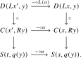
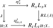

We finish by asking when adjunctions on the fibers of categories over a base assemble into a relative adjunction. The universal-arrow criterion reduces this question to compatibility with transport.
Let \(p\colon C\to S\) be a functor, let \(x : C_s\) and \(y : C_t\), and let \(u\colon s\to t\) be a morphism in \(S\). As before, we write \(C(x,y)_u\) for the fiber over \(u\) of \(C(x,y)\to S(s,t)\), the anima of morphisms from \(x\) to \(y\) lying over \(u\). This fiber and the categories \(C_s\) and \(C_t\) are formed in the common anima context of \(x\), \(y\), and \(u\).
Lemma 6.6.1 (Relative hom animae and cocartesian transport). Let \(p\colon C\to S\) be a cocartesian fibration and let \(u\colon s\to t\). For \(x \in C_s\) and \(y \in C_t\), composition with the canonical cocartesian lift \(x\to u_!x\) induces an equivalence \[ C_t(u_!x,y)\iso C(x,y)_u. \]
Proof
Apply Lemma 4.5.7 to the chosen lift \(x\to u_!x\) and the factorization \(u=\id_t\circ u\).
Now let \(p\colon C\to S\) and \(q\colon D\to S\), and let \(L\colon C\to D\) and \(R\colon D\to C\) be functors over \(S\). Their structure identifications induce functors \[ C\vectimes{L}D\longrightarrow C\vectimes{p,q}D \qquadtext{and}\qquad C\vectimes{R}D\longrightarrow C\vectimes{p,q}D, \] where \[ C\vectimes{p,q}D\coloneqq(C\times D)\times_{S\times S}\Fun([1],S). \] These send a morphism \(Lx\to y\) or \(x\to Ry\), respectively, to the pair \((x,y)\) together with its image \(p(x)\to q(y)\) in \(S\).
Proposition 6.6.2 (Relative hom-anima criterion). The data of a relative adjunction \(L\dashv R\) are equivalent to an equivalence \[ C\vectimes{L}D\simeq C\vectimes{R}D \] over \(C\vectimes{p,q}D\). In particular, taking fibers gives equivalences \[ D(Lx,y)\simeq C(x,Ry) \] over \(S(p(x),q(y))\).
Proof
By Proposition 4.4.7, an adjunction between the underlying functors is equivalent to an equivalence between the two directed pullbacks over \(C\times D\). For a relative adjunction, the usual equivalence sends \(f\colon Lx\to y\) to \(R(f)\eta_x\colon x\to Ry\). Since \(R\) lies over \(S\) and \(\eta_x\) lies over an identity morphism, these two arrows have the same image in \(S\), compatibly with their sources and targets. The equivalence is therefore over \(C\vectimes{p,q}D\).
Conversely, the proof of Proposition 4.4.7 constructs the unit and counit by applying the equivalence and its inverse to identity morphisms. If the equivalence is over \(C\vectimes{p,q}D\), these components lie over identity morphisms in \(S\). Hence the resulting adjunction is relative.
In particular, a relative adjunction restricts for every \(u\colon s\to t\) to equivalences \begin{equation} D(L_sx,y)_u\simeq C(x,R_ty)_u. \tag{6.11}\end{equation}
Let \(p\colon C\to S\) and \(q\colon D\to S\) be cocartesian fibrations. We first ask when a functor \(L\colon C\to D\) over \(S\) admits a relative right adjoint. We will then consider the converse problem: given a functor \(R\colon D\to C\) over \(S\), when do left adjoints to its fiber functors extend to a relative left adjoint?
A family of adjunctions \(L_s\dashv R_s\) on the fibers is an adjunction between \(C_s\) and \(D_s\) at the universal object in context \(s:S^{\simeq}\), including its unit, counit, and triangle identifications. As in the proof of Proposition 5.3.11, passing to total categories identifies this with a relative adjunction over \(S^{\simeq}\). For the universal morphism \(u\colon s\to t\) in context \(\Map([1],S)\), we substitute this adjunction along the source and target maps to \(S^{\simeq}\). The transport transformations below are formed in that context.
Theorem 6.6.3 (Fiberwise recognition of relative right adjoints). Let \(p\colon C\to S\) and \(q\colon D\to S\) be cocartesian fibrations, and let \(L\colon C\to D\) be a functor over \(S\). The following conditions are equivalent:
(1) The functor \(L\) admits a right adjoint relative to \(S\);
(2) The functor \(L\) is cocartesian over \(S\), and every fiber functor \(L_s\colon C_s\to D_s\) admits a right adjoint \(R_s\colon D_s\to C_s\).
Under these conditions, the restriction of the relative right adjoint to \(D_s\) is right adjoint to \(L_s\).
Proof
Suppose first that \(L\dashv R\) is an adjunction relative to \(S\). In context \(s:S^{\simeq}\), base change along \(s\colon *\to S\) gives an adjunction \(L_s\dashv R_s\) by Proposition 4.4.31.
To show that \(L\) preserves cocartesian morphisms, let \(a\colon x\to x'\) be
\(p\)-cocartesian over \(u\colon s\to t\). For any object \(y\) of \(D\), the relative
adjunction gives a commutative diagram

Conversely, suppose that \(L\) is cocartesian and fix fiberwise adjunctions \(L_t\dashv R_t\). For \(y : D_t\), let \[ \varepsilon_y\colon L_tR_ty\longrightarrow y \] be the fiberwise counit. We claim that this is also a universal morphism from \(L\) to \(y\): for every \(x : C_s\), the map \[ C(x,R_ty)\longrightarrow D(Lx,y),\qquad h\longmapsto\varepsilon_yL(h) \] is an equivalence. Since \(\varepsilon_y\) lies over \(\id_t\), this map commutes with the projections to \(S(s,t)\). We may therefore check the claim on fibers over \(u\colon s\to t\), where cocartesian transport and the fiber adjunction give \[ C(x,R_ty)_u \simeq C_t(u_!x,R_ty)\simeq D_t(L_tu_!x,y) \simeq D_t(u_!L_sx,y)\simeq D(Lx,y)_u. \] Here the third equivalence uses that \(L\) preserves cocartesian transport. To identify the composite, write \(h=\bar h\lambda\), where \(\lambda\colon x\to u_!x\) is the chosen lift. The fiber adjunction sends \(\bar h\) to \(\varepsilon_yL(\bar h)\); the remaining maps compose this with \(L(\lambda)\). Their composite is therefore \(\varepsilon_yL(h)\), as required. The map is an equivalence on every fiber, hence an equivalence by Lemma 6.1.12. The pointwise criterion Proposition 6.2.3 therefore produces a right adjoint \(R\colon D\to C\) whose value on \(y : D_t\) is \(R_ty\) and whose counit has component \(\varepsilon_y\).
Applying \(q\) to the counit and using \(qL = p\) gives a transformation \(pR\to q\) whose component at \(y : D_t\) is \(\id_t\). By Proposition 3.4.6, it is a natural isomorphism and equips \(R\) with the structure of a functor over \(S\). With this structure, the counit lies in \(\Fun_S(D,D)\). Thus \(L\dashv R\) is relative to \(S\) by Definition 4.4.28.
We now consider a functor \(R\colon D\to C\) over \(S\) and fiberwise adjunctions \(L_s\dashv R_s\). We will show that these extend to a relative adjunction precisely when the \(L_s\) commute with cocartesian transport. To formulate this condition, recall that the Beck–Chevalley transformation of \(R\) gives \begin{equation} \overline u^R\colon u_!R_s\longrightarrow R_tu_!. \tag{6.12}\end{equation} Write \(\eta^s\) for the unit of \(L_s\dashv R_s\). Under the adjunction on functor categories induced by \(L_t\dashv R_t\), the composite \[ u_!\xrightarrow{u_!\eta^s}u_!R_sL_s \xrightarrow{\overline u^R L_s}R_tu_!L_s \] corresponds to a natural transformation \begin{equation} \theta_u\colon L_tu_!\longrightarrow u_!L_s. \tag{6.13}\end{equation} By Proposition 4.4.4, it is characterized by the identity \begin{equation} R_t\theta_u\circ\eta^t u_! = \overline u^R L_s\circ u_!\eta^s. \tag{6.14}\end{equation}
Proposition 6.6.4 (Relative left-adjoint criterion). Let \(p\colon C\to S\) and \(q\colon D\to S\) be cocartesian fibrations, and let \(R\colon D\to C\) be a functor over \(S\). Fix fiberwise adjunctions \(L_s\dashv R_s\). Then \(R\) admits a left adjoint relative to \(S\) inducing these fiberwise adjunctions if and only if the transformation \(\theta_u\) of (6.13) is invertible for every morphism \(u\colon s\to t\) in \(S\). When these conditions hold, the relative left adjoint is cocartesian, and its Beck–Chevalley transformation over \(u\) is \(\theta_u^{-1}\).
Proof
Suppose first that \(L\dashv R\) is a relative adjunction inducing the chosen fiberwise
adjunctions. Then
Theorem 6.6.3 shows that \(L\) is cocartesian. Let
\(\overline u^L\colon u_!L_s\to L_tu_!\) be its Beck–Chevalley transformation.
For the chosen lift \(\lambda\colon x\to u_!x\) in \(C\), naturality of the unit gives

Conversely, suppose that every \(\theta_u\) is invertible. For \(x : C_s\), we claim that the fiberwise unit \(\eta_x^s\colon x\to R_sL_sx\) is a universal morphism from \(x\) to \(R\). For every \(y : D_t\), we must therefore show that \[ D(L_sx,y)\longrightarrow C(x,Ry),\qquad g\longmapsto R(g)\eta_x^s \] is an equivalence. This map again commutes with the projections to \(S(s,t)\). On the fiber over \(u\colon s\to t\), cocartesian transport and the fiber adjunction give \[ D(L_sx,y)_u \simeq D_t(u_!L_sx,y)\simeq D_t(L_tu_!x,y) \simeq C_t(u_!x,R_ty)\simeq C(x,Ry)_u, \] where the second equivalence is precomposition with \(\theta_u\). To identify the composite, write \(g=\bar g\lambda\) for the chosen lift \(\lambda\colon L_sx\to u_!L_sx\) in \(D\). The middle two equivalences send \(\bar g\) to \[ R_t(\bar g)R_t(\theta_{u,x})\eta^t_{u_!x} =R_t(\bar g)\overline u^R_{L_sx}u_!(\eta_x^s) \] by (6.14). Composing with the lift \(x\to u_!x\) gives \(R(g)\eta_x^s\), by the definition of \(\overline u^R\) and naturality of the chosen lifts. Thus the displayed map is an equivalence on every fiber, hence an equivalence by Lemma 6.1.12. The left-adjoint form of Proposition 6.2.3 produces a left adjoint \(L\colon C\to D\) with the prescribed values and unit components.
Applying \(p\) to the unit and using \(pR=q\) gives a natural transformation \(p\to qL\). Its components are identities, so it is invertible by Proposition 3.4.6. Its inverse equips \(L\) with the structure of a functor over \(S\), with respect to which the unit lies over \(S\). By Proposition 4.4.29, the adjunction is therefore relative to \(S\). Applying Theorem 6.6.3 shows that \(L\) is cocartesian. The necessity argument above, applied to this relative adjunction, then identifies \(\theta_u\) with \((\overline u^L)^{-1}\) for every \(u\).
Corollary 6.6.5 (Cartesian dual). Let \(p\colon C\to S\) and \(q\colon D\to S\) be cartesian fibrations, and let \(R\colon D\to C\) be a functor over \(S\). The functor \(R\) admits a left adjoint relative to \(S\) if and only if \(R\) is cartesian and every fiber functor \(R_s\colon D_s\to C_s\) admits a left adjoint. The relative left adjoint restricts to these fiberwise left adjoints. If \(L\colon C\to D\) denotes this relative left adjoint, then \(L\) is cartesian if and only if the canonical Beck–Chevalley transformations \[ L_su^*\longrightarrow u^*L_t \] are invertible for every \(u\colon s\to t\) in \(S\).
Proof
The first assertion follows by dualizing the proof of Theorem 6.6.3. The last assertion is the cartesian version of Lemma 4.7.3.